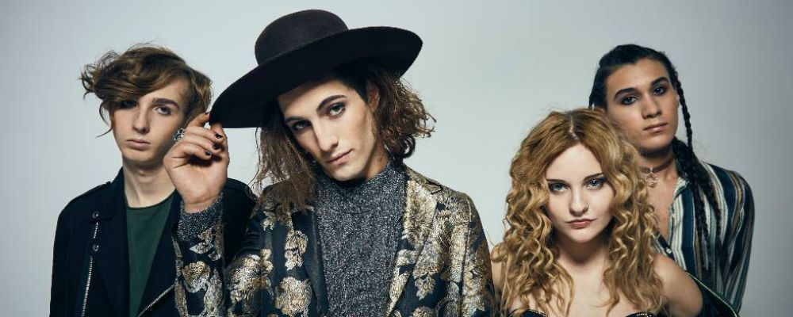
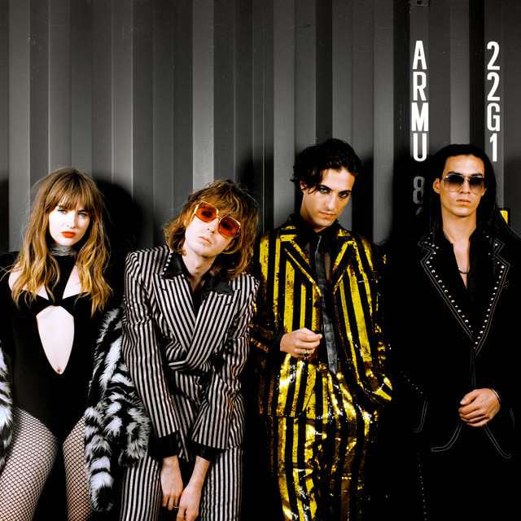

La historia de Maneskin
La banda estaformada por cuatro muchachos de Roma: Damiano David voz principal, nacido el 8 de enero de 1999, Victoria de Angelis al bajo y también nacida el 28 de abril de 2000, Thomas Raggi a la guitarra y nació el 18 de enero de 2001 y Ethan Torchio a la batería y nacido el 8 de octubre de 2000.
Una puesta en escena efectiva, con una imagen más que estudiada, jugando con la ambigüedad sexual, todos vestidos en color rojo vino y con estética de grupos como Jane´s Addiction y un sonido rockero muy fresco.
Cantando en su idioma natal y con una química escénica indudable, se alzaron con el premio a pesar de cambiar uno de los versos de su canción triunfadora: Zitti e Buoni (Cállate y bien). Para su interpretación primera devolviendo el verso original y que está recogido en su último trabajo discográfico: Teatro de´Ira Vol I, cuando fueron proclamados vencedores. Un verso que hace referencia a cierta parte de la anatomía masculina.
Después de eso, todo ha ido rodado para Maneskin que están enfrascado en gira por toda europa e incluso ya han aparecido en el mítico Times Square de Nueva York y con su nuevo single: I wanna be your slave. Con él han llegado a número uno en las listas británicas algo que no se conseguía por parte de un artista italiano desde mucho tiempo atrás.
El grupo Italiano que triunfó tras arrasar en Eurovision
De actuar en las calles de Roma a ganar Eurovisión. La banda de rock Måneskin acaba de otorgarle a Italia su tercer triunfo en la 65ª edición del festival europeo, una edición muy especial marcada por la pandemia y cuya final acaba de celebrarse en el Ahoy de Róterdam. Los ganadores del último Festival de Sanremo competían con Zitti e Buoni, un canto a la singularidad y diferencia frente a lo socialmente establecido.
Favoritos en Róterdam desde los primeros ensayos, Måneskin, ataviados con petos con tirantes estilo rockero, genderless, gargantilla y ojos ahumados, han traído a Eurovisión un rock transgresor, insolente y reivindicativo. La banda romana ha ganado el certamen con 524 puntos, siendo primeros en el televoto (318 puntos) y cuartos en el jurado (206 puntos).
Trayectoria
De ahí a las calles de Roma donde tocaban casi al “aire” sus temas. Luego llegó su gran oportunidad cuando se presentaron al X-factor Italia en 2017 quedando en segundo puesto del concurso y dándoles la posibilidad de grabar un primer EP. Este disco vio la luz con el título de Chosen y que mezcla estilos desde el rock hasta el reggae con la forma particular de rapear de Damiano que le otorga una de sus características más destacadas.
De este EP podríamos resaltar dos temas: El que da título, Chosen y Beggin que se han convertido ahora cuando han sido redescubiertos por el público mundial, en otro himno del grupo.
En 2018 publican su primer disco largo: Il Ballo della Vita con el que consiguen notoriedad aún mayor en su país natal con canciones como: Torna a casa o Le parole lontane; que ahora también son temas muy conocidos
Festivales
Pero fue este año, el 2021 cuando todo vino a cambiar para Maneskin cuando se presentaron a la 71ª edición del Festival de San Remo con su tema Zitti e Buoni, proclamándose ganadores.
De ahí a ser elegidos para representar a Italia en Eurovisión un paso y con su segundo LP, publicado en el mismo mes de Marzo, bajo el título de : Teatro d´Ira Vol. 1.; ya estaban todos los elementos para la mezcla perfecta y conseguir lo que ha venido después de la famosa noche del 22 de mayo donde incluso se acusó a Damiano de haber consumido drogas en pleno directo.
Inmediatamente aparecían en primer lugar en youtube sus videos y son fáciles de encontrar. Incluso los primeros cuando casi adolescentes grababan temas caseros hasta llegar al último que han estrenado estos días con la canción que los ha llevado a la fama en una plaza tan complicada como lo es el Reino Unido: I wanna be your slave.
Video que está levantando más de una ampolla en varios sectores por su contenido ambiguo, sexualmente hablando y por su estética. Pero aún así, Maneskin están en boca de muchos youtubers que reaccionan a sus presentaciones y canciones.
También están visitando festivales, los que se pueden celebrar, en lugares tan lejanos como Suecia donde los locales intentaban cantar Zitti e Buoni en un italiano un tanto escandinavo.
La historia de estos 4 jóvenes de Roma parece que ha despegado, desde las calles de la ciudad de Rómulo y Remo para el resto del mundo y esperamos que la Luz de la luna les siga iluminando el camino que han comenzado a andar.
Como dicen en su letra: “La gente parla…” y eso es evidente en su caso.
Eso también ha permitido que otras leyendas del ámbito del rock hayan
descubierto su talento.